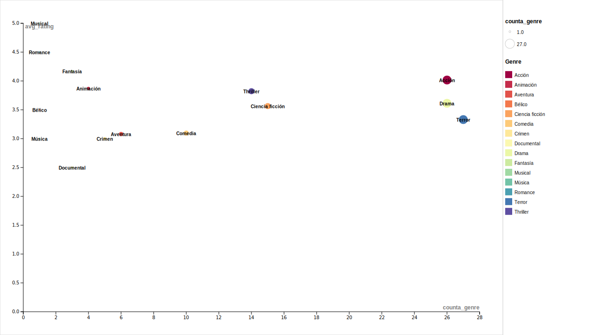

01 · Volumen mensual
Películas vistas por mes en 2025
¿Cómo varió mi ritmo de visionado a lo largo del año?

02 · Satisfacción mensual
Promedio de rating por mes en 2025
¿En qué meses disfruté más lo que vi?

03 · Patrón mensual y semanal
Heatmap de frecuencia de visionado (día x mes)
¿Cuándo veo más películas según el mes y el día de la semana?

04 · Hábito semanal
Visualización de películas por día
¿Qué días de la semana miro más películas?
05 · Géneros a lo largo del año
Distribución mensual de géneros vistos en 2025
¿Qué géneros dominaron cada mes del año?

06 · Productividad vs. satisfacción
Productividad vs. satisfacción por género
¿Los géneros que más veo son también los que más disfruto?

07 · Distribución por década
Análisis de la distribución del rating por década
¿Con qué décadas del cine soy más exigente o más generosa?